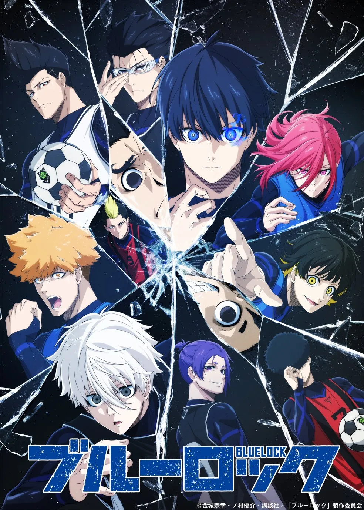

"블루 록"세계 제일의 에고이스트가 아니면, 세계 제일의 스트라이커가 될 수 없다.
일본을 월드컵 우승으로 이끌 스트라이커를 육성하기 위해 일본 축구 연맹은 어떤 계획을 내세웠다.
그 이름은'블루 록(푸른 감옥)'프로젝트.
그렇게해서 모인 300명의 고등학생들.
거기에다 모두 FW(포워드)포지션이었다.
299명의 축구 생명을 희생시켜 탄생할, 일본 축구에 혁명을 불러일으킬 스트라이커는 과연? 지금, 역사상 가장 뜨겁고 정신 나간 축구 애니메이션이 개막한다.